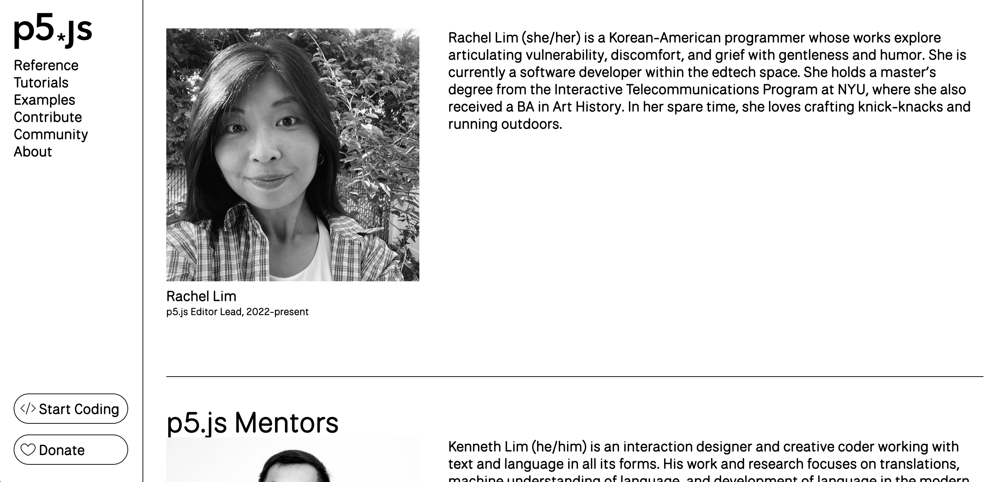
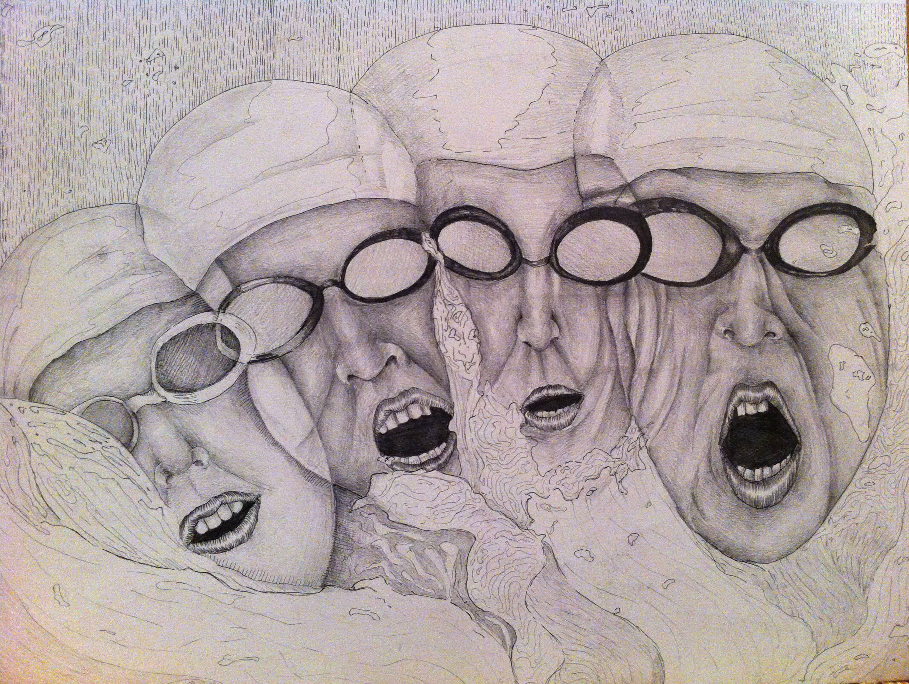
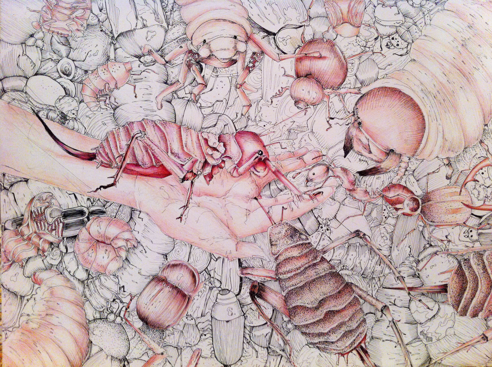
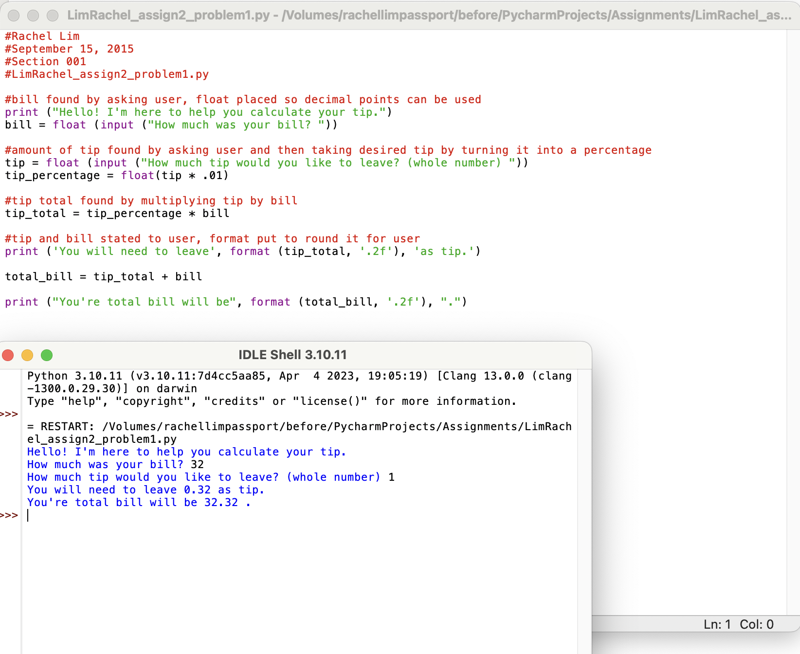
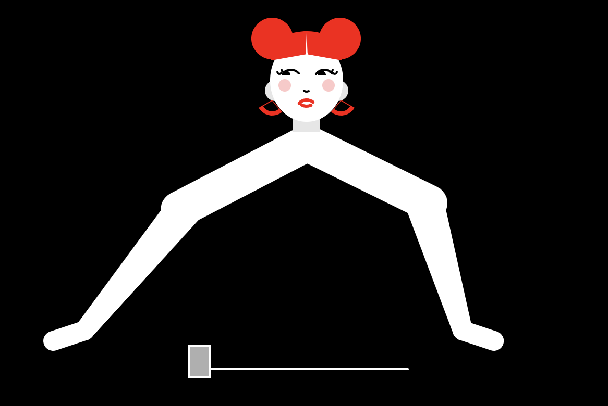
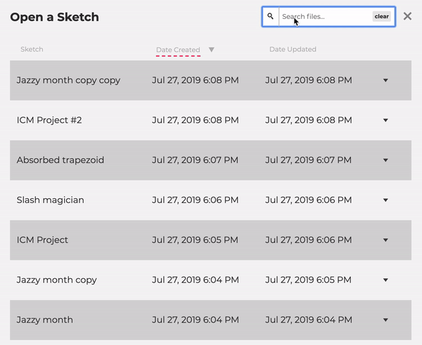
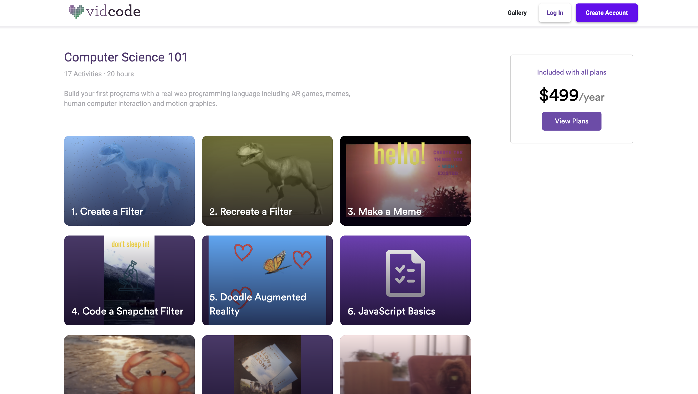
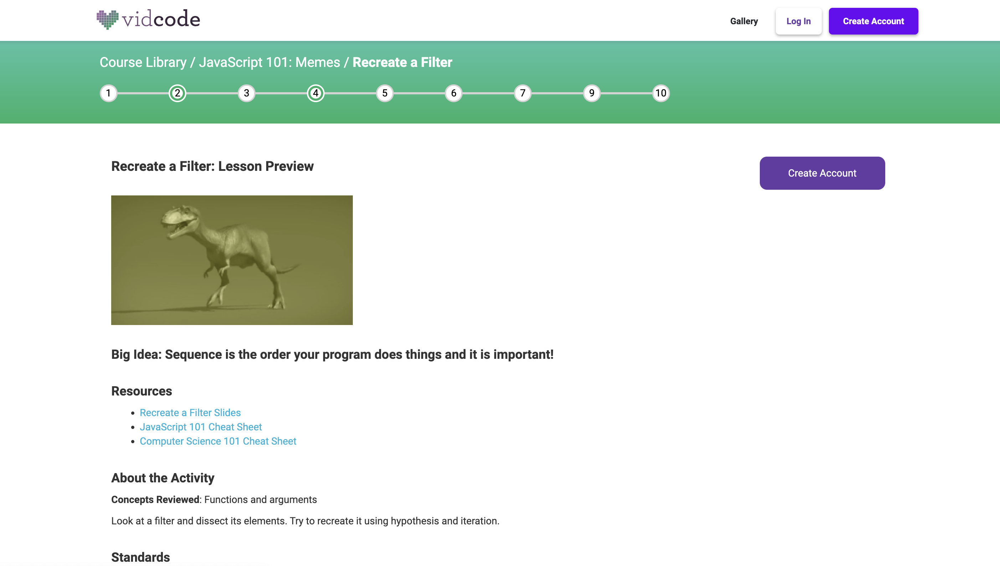

Introduction to Open Source Contribution
Who Am I?
My name is Rachel!
Currently, I'm a lead for the p5.js Editor, which is an online editor for the p5.js library. Before we begin, I want provide a brief overview on my journey with open source contribution!
 Was interested in art as a child. Discouraged by family from pursuing STEM oriented subjects.
In undergraduate program, studied art history but was not too invested in the major. Took a CS course, was interested in the professor talking about working with art and code. Took more CS courses to explore this but was disappointed by reality vs expectations.
Discovered ITP, applied looking to further explore museum technology. First semester ICM course was taught by Cassie Tarakajian, who created the p5.js editor. This course and overall program completely changed my outlook on programming. Was introduced to open source and programming.
Applied to GSoC in 2019. Continued contributing back to p5.js project as a GSoC Mentor (Katie Liu, Connie Zheng).
 Worked within education technology startups for around 3 years, wanted to explore a more accessible and community oriented approach to developing educational tools.